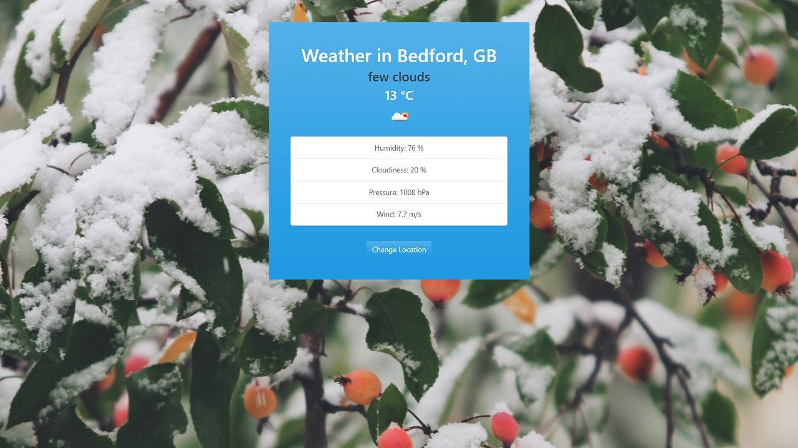
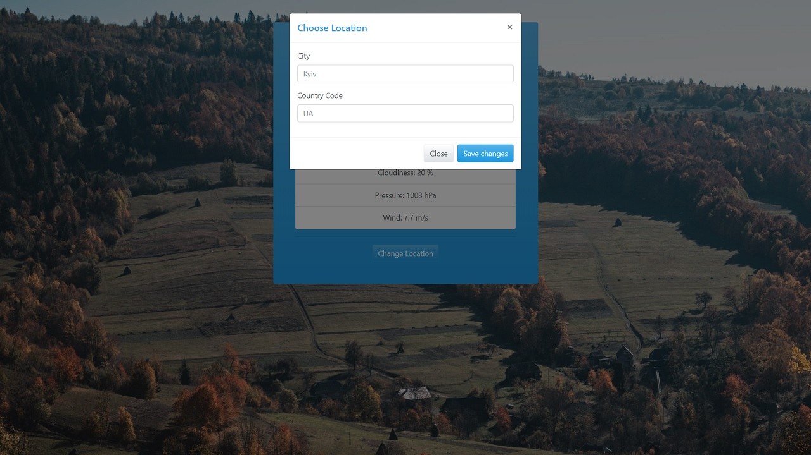

WeatherJS APP
The application that allows a user to search for weather conditions by the city and the country code. Data is stored in local storage.
The main goal of this project was to practice fetch API’s with Fetch, Async Await in vanilla JS.
Live Link ➡
Technologies:
- - Bootstrap (and Bootstrap Modal Component with a little jQuery)
- - JavaScript (ES6 Classes templates)
- - Fetch API
- - OpenWeatherMap API
Popup for changing location

Acknowledgments:
- - Tips used from: Traversy Media from Udemy; Api doc from openweathermap.org; Stack Overflow
- - Images from Unsplash